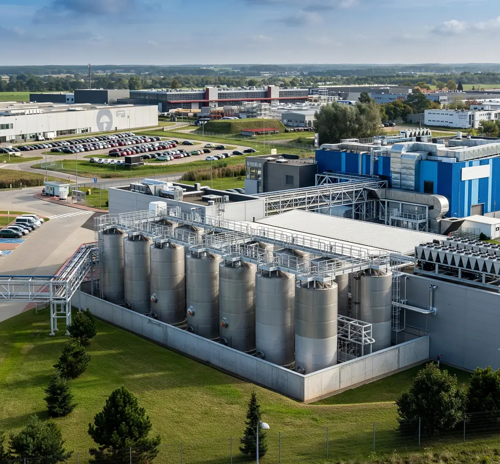

6 latKonsekwencji
Tyle trwała jedna z realizowanych przez nas strategii Public Affairs, obejmująca działania na poziomie lokalnym, krajowym i europejskim.
Decyzje polityczne, zmiany regulacyjne, geopolityka i nastroje społeczne coraz silniej wpływają na firmy. Pomagamy organizacjom rozumieć te procesy, przewidywać ich konsekwencje i działać odpowiednio wcześnie.
Podejście
Budujemy strategie Public Affairs, które wspierają realizację celów biznesowych, wzmacniają pozycję organizacji w otoczeniu instytucjonalnym i społecznym oraz pozwalają skutecznie uczestniczyć w debacie publicznej.
Łączymy kompetencje analityczne, doradcze i komunikacyjne.
Wychodzimy poza monitoring legislacyjny: analizujemy konsekwencje biznesowe, wcześnie identyfikujemy ryzyka i planujemy scenariusze.
Budujemy społeczną akceptację dla działalności i inwestycji, szczególnie w energetyce, infrastrukturze, górnictwie i transporcie.
Łączymy doradztwo instytucjonalne z komunikacją strategiczną, zarządzaniem reputacją i dialogiem społecznym w ramach całej K+ Group.
Usługi
Dziewięć obszarów, w których wspieramy organizacje na styku biznesu, administracji publicznej i społeczeństwa.
Projektujemy strategie wspierające cele biznesowe organizacji w kontekście politycznym, regulacyjnym i społecznym. Określamy priorytety, scenariusze i taktykę działania.
Monitorujemy procesy legislacyjne, decyzje polityczne, kierunki polityk publicznych i zmiany w otoczeniu międzynarodowym. Analizujemy ich konsekwencje dla biznesu.
Identyfikujemy kluczowych interesariuszy, analizujemy ich stanowiska, interesy i wzajemne zależności. Projektujemy i wspieramy procesy dialogu oraz budowania relacji.
Wspieramy organizacje w budowaniu profesjonalnych, transparentnych relacji z administracją publiczną, samorządami, instytucjami krajowymi i międzynarodowymi.
Identyfikujemy ryzyka polityczne, regulacyjne, społeczne i reputacyjne. Opracowujemy scenariusze działania i wspieramy organizacje w sytuacjach o wysokiej wrażliwości publicznej.
Budujemy argumentację, narracje i stanowiska oparte na danych oraz wiedzy eksperckiej. Wspieramy merytoryczny udział organizacji w debacie publicznej i konsultacjach.
Identyfikujemy obszary wspólnych interesów, wspieramy budowanie partnerstw, koalicji branżowych i platform współpracy wokół istotnych wyzwań gospodarczych i społecznych.
Budujemy społeczną akceptację dla działalności i inwestycji. Prowadzimy dialog z lokalnymi społecznościami i wspieramy konsultacje społeczne.
Projektujemy działania komunikacyjne wspierające cele Public Affairs. Łączymy media relations, komunikację ekspercką, działania digital i pozycjonowanie liderów.
Dla kogo
Wspieramy organizacje, gdy:
Zmiany legislacyjne lub regulacyjne mogą wpłynąć na ich model biznesowy.
Planują strategiczną inwestycję lub wejście na nowy rynek.
Potrzebują wzmocnić swoją pozycję w otoczeniu instytucjonalnym.
Działają w sektorze podlegającym transformacji lub silnej presji regulacyjnej.
Realizują projekty wymagające akceptacji społecznej.
Chcą uczestniczyć w debacie publicznej i budować rozpoznawalność swoich kompetencji.
Mierzą się z konfliktem interesów, presją społeczną lub ryzykiem reputacyjnym.
Potrzebują lepiej rozumieć otoczenie, aby podejmować decyzje biznesowe.
Metodologia K+ Group Public Affairs
Cztery etapy tworzą cykl. Monitoring zamyka jeden obieg i otwiera kolejny, bo otoczenie organizacji stale się zmienia.
Doświadczenie
Od lat wspieramy organizacje w strategicznych projektach na styku biznesu, administracji publicznej i społeczeństwa. Budujemy koalicje, wspieramy procesy inwestycyjne, angażujemy instytucje i wprowadzamy istotne problemy gospodarcze i społeczne do debaty publicznej.
6 latKonsekwencji
Tyle trwała jedna z realizowanych przez nas strategii Public Affairs, obejmująca działania na poziomie lokalnym, krajowym i europejskim.
5 100Sojuszników
Tyle osób i podmiotów zaangażowaliśmy w ramach jednego z naszych projektów Public Affairs.
40+Instytucji
Tyle instytucji i samorządów pozyskaliśmy do współpracy przy jednym projekcie dotyczącym zdrowia publicznego.
20+Nagród branżowych
Za projekty z obszaru Public Affairs i Advocacy, m.in. w konkursach Złote Spinacze, Effie Awards i Innovation.
Koalicja przedsiębiorców i rolników z południowo-zachodniej Wielkopolski
Wieloletnia strategia Public Affairs, działania w otoczeniu legislacyjnym, budowanie szerokiej koalicji interesariuszy na poziomie lokalnym, krajowym i europejskim.

Capchem: budowa fabryki w Śremie
Kompleksowa strategia społecznego zabezpieczenia inwestycji zagranicznej, dialog z interesariuszami, wsparcie konsultacji społecznych i zarządzanie ryzykiem reputacyjnym.
Fundacja Słonie na Balkonie: Żałoba 146 rodzin
Wprowadzenie problemu dostępności wsparcia zdrowia psychicznego dzieci i młodzieży do ogólnopolskiej debaty publicznej. Zaangażowanie ponad 40 instytucji, administracji publicznej, samorządów, ekspertów i liderów opinii.
Zespół
Łączymy doświadczenie w doradztwie na poziomie zarządów z praktyką prowadzenia wieloletnich procesów, budowania koalicji i zarządzania relacjami z interesariuszami.
Pracujemy z ekspertami branżowymi i legislacyjnymi z różnych sektorów i organizacji biznesowych oraz z siecią PRGN na ponad 70 rynkach.
Kontakt
Opisz krótko sytuację. Odezwiemy się, aby umówić rozmowę. Wszystkie informacje traktujemy poufnie.
Managing Partner K+ Group
Założyciel i prezes K+ Group, doradca strategiczny zarządów i kadry zarządzającej, z ponad 20-letnim doświadczeniem w obszarze komunikacji i Public Affairs. Doktor nauk politycznych, absolwent studiów doktoranckich Uniwersytetu Wrocławskiego.
Doradza klientom w kluczowych dla ich działalności procesach biznesowych, inwestycyjnych i reputacyjnych, szczególnie w projektach realizowanych w złożonym otoczeniu politycznym, regulacyjnym i społecznym. Wspiera organizacje w wypracowywaniu strategii działania, zarządzaniu ryzykiem oraz budowaniu pozycji w relacjach z kluczowymi interesariuszami.
Sprawował nadzór strategiczny nad wieloletnimi projektami Public Affairs, m.in. dla sektora energetycznego, przemysłowego i organizacji społecznych, w tym nad nagradzanymi projektami dotyczącymi inwestycji Capchem oraz planowanej budowy kopalni odkrywkowej w Wielkopolsce.
Od 13 lat kieruje grupą komunikacji zintegrowanej, wielokrotnie nagradzaną w polskich i międzynarodowych konkursach, m.in. Złote Spinacze, Effie Awards i SABRE Awards EMEA. Czterokrotnie nominowany do tytułu Ad WO/MAN, juror Effie Awards i Złotych Spinaczy. Od 2023 roku członek Sądu Koleżeńskiego SAR, wcześniej wiceprezes Związku Firm Public Relations.
Strategy & Public Affairs Director K+ Group
Od ponad 17 lat projektuje i realizuje strategie Public Affairs, komunikacji korporacyjnej i społecznej oraz doradza organizacjom działającym w otoczeniu wysokiej wrażliwości politycznej, regulacyjnej i społecznej.
Posiada wieloletnie doświadczenie we współpracy ze spółkami giełdowymi, spółkami Skarbu Państwa oraz podmiotami o strategicznym znaczeniu dla polskiej gospodarki. Specjalizuje się w projektach wymagających dialogu z interesariuszami, zarządzania ryzykiem reputacyjnym, komunikacji zmian oraz budowania relacji z administracją publiczną, samorządami i społecznościami lokalnymi.
Doradzała m.in. JSW, PGE, Tauron Polska Energia, Enea, Energa, KGHM Polska Miedź, Amazon Fulfillment, Globalworth, Kraft Heinz oraz Selena FM.
Istotnym obszarem jej działalności jest również Social & Health Advocacy. Współpracuje z organizacjami pozarządowymi i instytucjami ochrony zdrowia, wspierając je w budowaniu partnerstw, angażowaniu różnych środowisk oraz wprowadzaniu istotnych problemów społecznych i systemowych do debaty publicznej. Realizowała projekty m.in. dla Fundacji Słonie na Balkonie, Fundacji Onkologiko oraz Dolnośląskiego Centrum Onkologii, Hematologii i Pulmonologii.
Zespoły, których pracę nadzorowała, zdobyły ponad 30 nagród w konkursie Złote Spinacze, w tym w kategorii Advocacy i Public Affairs. Przez cztery lata zasiadała również w jury konkursu.
Community Relations Lead K+ Group
Ekspertka w obszarze Public Affairs i komunikacji strategicznej z ponad 15-letnim doświadczeniem w prowadzeniu projektów na styku biznesu, administracji publicznej i społeczeństwa.
Specjalizuje się w budowaniu relacji z interesariuszami, dialogu społecznym oraz komunikacji projektów inwestycyjnych. Wspiera organizacje w zarządzaniu społecznym wymiarem ich działalności, identyfikowaniu ryzyk i budowaniu społecznej akceptacji dla realizowanych przedsięwzięć.
Posiada doświadczenie w prowadzeniu złożonych projektów międzysektorowych, wymagających współpracy z partnerami biznesowymi, instytucjami publicznymi, samorządami, ekspertami i organizacjami społecznymi. W swojej pracy wykorzystuje badania społeczne, analizę postaw interesariuszy oraz wiedzę o mechanizmach kształtowania opinii publicznej.
Absolwentka Uniwersytetu Wrocławskiego. Prowadziła strategie i kampanie dla liderów branżowych w Polsce i na rynkach międzynarodowych, nagradzane m.in. w konkursach SABRE Awards EMEA, Effie Awards oraz Złote Spinacze.